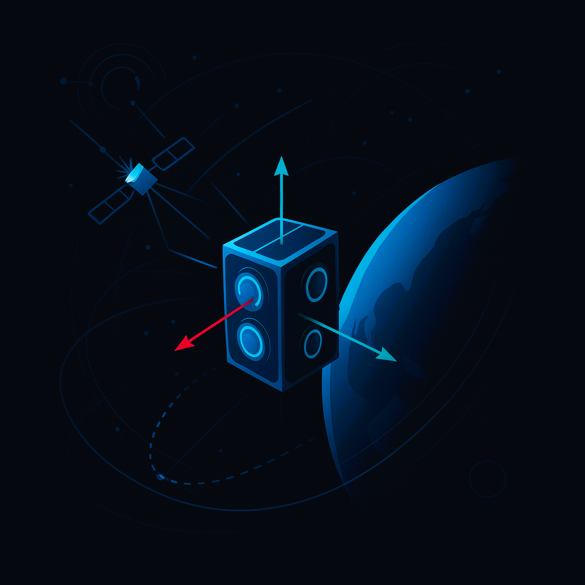
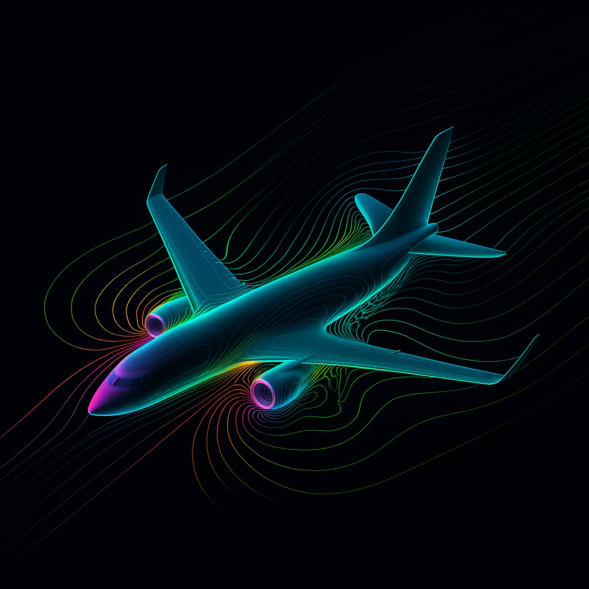

Where Mathematics Becomes Motion
ApexOrbital creates cinematic physics simulations — turning chaotic systems, differential equations, and numerical experiments into visual stories you can feel.

Cinematic Chaos
Real-time integrations of chaotic systems — rendered as smooth, looping attractors that reveal the hidden geometry of nonlinear dynamics.
Simulation Labs & Experiments
Each lab starts from equations of motion or governing PDEs and ends in animation — blending numerical methods, control, and visualization.

Attitude Dynamics Cinema
High-fidelity rigid-body dynamics and attitude control, rendered as smooth motion instead of raw state plots.
Dynamics
Quaternions
Visualization
Behind the Simulation →
Orbital Geometry Frames
Visual storytelling for orbits and relative motion, built from angles-only tracking and numerical propagation.
Orbits
Estimation
NumPy
See the Motion →

Neural Flow Fields
Physics-inspired learning pipelines that turn pressure and velocity fields into evolving visual textures.
CFD
ML
PyTorch
Explore the Field →
About
I’m Mehdi Muzaffari, and I design visual experiences for physics. I take systems like chaotic attractors, orbital dynamics, and fluid flows and push them through code, numerics, and rendering pipelines until the math feels alive.
ApexOrbital is my personal studio for experimenting with cinematic simulations — blending high-performance computing, scientific modeling, and motion design.
Get in touch
Collaborations, simulations, visualizations, or just to talk physics and motion — feel free to reach out.